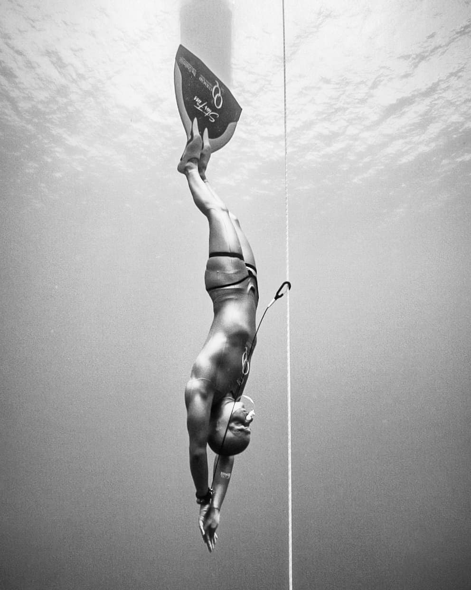

We love new members! Whether you're brand new to the sport and want to try it out, or super-experienced and want to train for your next competition, you'll be welcome to join the club.
Everyone has to attend an induction, even if you've been diving for years, you've taken a course, or you're a member of another club, see our joining page.
Once you've done an induction, you can join the club. You'll need to fill out the membership form below and pay the club fees. Our fees are $100 per calendar year or $10 per month for the remainder of a year. Then you can attend our training sessions, trips, and other events.
Joining the club will make you a member of Freediving New Zealand which means you can enter AIDA competitions (we're in the process of affiliating with FNZ, so this benefit doesn't apply quite yet).
